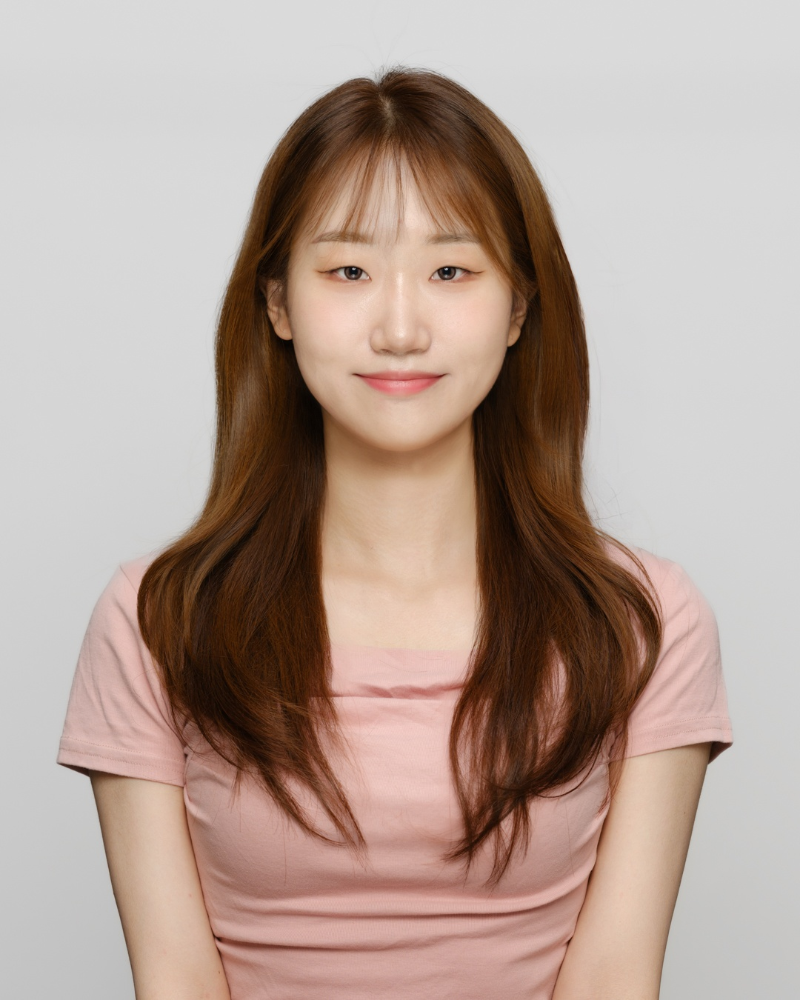

Yongseon Lee
I am a master's student in the Department of Applied Artificial Intelligence at Seoul National University of Science and Technology. My research focuses on time-series data representation, and I aim to contribute to developing more effective ways to represent and understand temporal data.

Research Interests
I am interested in exploring various research areas involving time-series data. Currently, I am conducting research in this field at the Pattern Analysis Lab. Recently, I have begun studying model designs tailored to trend and seasonal components in time-series data, and I plan to further develop this work toward time-series representation learning.
Research Experience
ETRI(Electronics and Telecommunications Research Institute)
June 2025 – Sep 2025
- Advisor: Prof. JeSeok Ham
- Vehicle trajectory prediction in V2X cooperative perception environments
IPAL, SeoulTech
June 2025 – Present
- Advisor: Prof. BeomSeok Oh
- Time-Series Data Representation
Education
Seoul National University of Science and Technology
-
B.S. in Applied Artificial Intelligence
Mar 2022 – Feb 2026 -
M.S. in Applied Artificial Intelligence
Mar 2026 – present
Honors & Awards
- Best Paper Award, ACK 2025 “Vehicle Trajectory Prediction Model in a Vehicle-to-Infrastructure Cooperative Perception (V2X) Environment”
- Full Tuition Scholarship Mar 2025 – Feb 2026
Extracurricular Activities

Tobigs, AI Academic Association
June 2025 – July 2026(Expected)
Promoted ToBigs, an inter-university AI academic association, and facilitated communication among undergraduate and graduate students interested in AI. Participated in semester-long team projects using diverse datasets and models. Took part in Mixeup, a joint IT/DATA hackathon, as a participant in 2025 and as an organizer in 2026, contributing to collaboration across AI and data science student communities.
STEM(SeoulTech Encouraging Mento)
Mar 2023 – Dec 2025
Represented the university at admissions fairs and guided prospective students and parents. Developed mentoring and communication skills by studying changing admissions policies and providing tailored advice.

Student Council
Mar 2022 – Dec 2023
Planned and organized various departmental events as the Planning Vice Chair of the student council. Through this role, I developed collaboration and problem-solving skills by working with diverse groups of people.